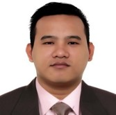

Carlo R. Dianco

Personal Summary
A trustworthy, result driven, reliable, capable and enthusiastic person who is able to take on the technical aspect and coordinating duties of any leadership role. Highly organized, flexible and courageous with leadership qualities which have been exercised through experience. Keen to find challenging position within a successful and dynamic organization where I can utilize my theoretical and practical skills and knowledge.
Education
- Bachelor of Science in Electornics Engineering - Polytechnic University of the Philippines (Bataan)
Work Experience
- Senior Production Engineer (August 2011 - February 2014)
August 2011 - February 2014
- Responsible for defining automation project criteria, designing within specifications, developing within resource restrictions and deploying within delivery requirements.
- Creation of machine program base on the requirement of operation and technical specification.
- Applies simulation and test methods to fully verify project specification and related variances.
- Establish a procedure for the control of structure and specifications modifications, maintain records of all projects completed and expense reports.
- Controls project variances and manages probable and actual risks during the development period.
- Conducts technical training to the concerned people upon deployment of the machine.
- Prepare technical documentations (Safety Operating Procedure, Technical manual, Operations manual, etc.)
- Manufacturing Specialist
February 2014 - November 2014
- Reports directly to the Feedmill Manufacturing Head.
- Responsible for verifying activities and evaluation of performance of 3rd party service provider and its conformance to operating standards on quality and productivity.
- Sorts data and information daily and provides weekly and monthly status reports of the operation.
- Provides technical support for the 3rd party operation. Involves in process-related activities to minimize if not eliminate operational delays and rejections.
- Performs / conducts daily operation audit based on the standard protocols and procedure.
- Process Engineer/Supervisor
July 2016-Present
- Ensures process stability and improvement through regular audit and Structured Problem Solving
- Proposes, defines, implements, validates industrial production system, process & equipments of production, industrial and specific tooling (to ensure the quality at the expected production cost) for the benefit of Production Department.
- Ensures that all machines are running 100% efficient through compliance on the planned preventive maintenance.
- Acts as project leader, sets and implements project meetings, and coaches’ workshop owners as necessary and conducts product and equipment validations.
- Provides data analysis on quality issues and proposes action plans to resolve problem areas.
- In-charge of the Process Control Plan definition / alignment with GE and Quality and overall ensures that all working instructions and technical information are available and known to ensure the right process (to contribute to quality achievement).
- Ensures PCP implemented is aligned with the Global Essilor Standard.
- Increases capability of the process and increase capacity of machine through cycle time.
- Validates process evolution through new raw materials, tools or equipment or new process validation.
- Respects ESH rules; contribute to related audits and Integrate Safety audits in workshops.
Skills
- HTML,CSS,JS
- PLC Application programming (KEYENCE, Mitsubishi, Omron)
- HMI design and programming
- Knowledgeable in 2D/3D CAD ( AutoCAD/Solid works /Sketch Up)
- Knowledgeable in factory automation and control system (PLC, relays, sensors, and other devices)
- Machine Electrical circuit design.
- Machine maintenance and troubleshooting skills
- Injection Molding Machine Operation and Block mold Maintenance
- Injection Tools and die maintenance
- Injection Machine Calibration and Parameter Setting
- Applied Feasibility Studies, Data Gathering and Experimentation
- Project Documentation and Technical Manual generation
Awards/Certifications/Trainings
- October 2015 ECE Licensure Examination Passer (ECE License #063-769)
- May 2015 Electornics Techinician Licensure Examination Passer (ECT License#3333)
Project Involvement
Project Title: Oil Proof Pre-heating Bed
- Project Description: Installation of heating bed prior to varnish application process on oil proof products.
- Project Merit: Reduced cycle time from 30 minutes to 3 minutes.
Decrease occurrence of bubble defects
Project Title: Andon Real Time Monitoring System
- Project Description: Computerized real time monitoring system to measure OEE and productivity.
- Project Merit: Accurate and real time monitoring system.
Provide guidance for efficient operation.
Line to line trouble notification for faster response by support groups.
Project Title: Thickness Improvement for Concave Tools
- Project Description: Standardization of tools VR to be used globally.
- Project Merit: Cost reduction on buying new sets of tools.
100% lens thickness reject reduction.
Project Title: HMC Process Capability Improvement
- Project Description: Improvement of Process Capability from 0.50 to more than 1.0
- Project Merit: AR lens color Improvement
Process and product parameters stability
Other
© Carlo Dianco.All rights reserved.